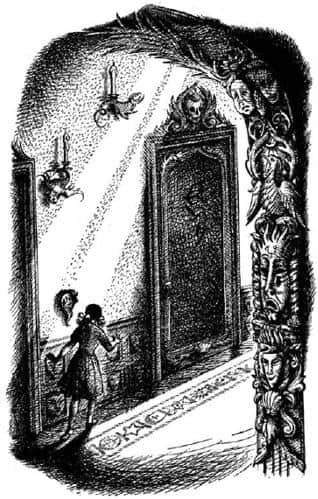
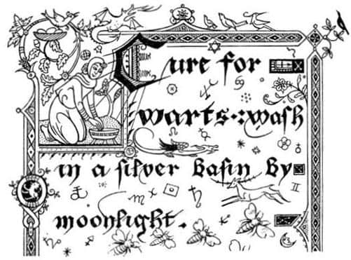

Büyücünün Kitabı
Görünmez insanlar misafirlerine krallara yaraşır bir ziyafet çektiler. Tabakların ve yemeklerin masaya gelişini görüp de taşıyanları görmemek çok komikti. Tabaklar tek sıra halinde hareket etselerdi bile komik olurdu. Fakat böyle değildi. Uzun yemek salonu boyunca bir sürü sıçrama ve sekmeyle hareket ediyorlardı. Her sıçramanın en yüksek noktasında bir tabak yerden yaklaşık beş metre yükseklikteydi; sonra aşağıya inip aniden bir metrede duruyordu. Eğer tabakta çorba ya da sulu yemek varsa sonuç oldukça kötüydü.
“Bu insanları çok merak etmeye başladım” diye fısıldadı Eustace, Edmund’a. “Belki de insan değillerdir, sen ne düşünüyorsun? Daha çok dev birer çekirge ya da kurbağa olduklarını sanıyorum.”
“Öyle görünüyor” dedi Edmund. “Aman çekirge fikrini Lucy’nin aklına getirme. Böceklerden pek hoşlanmaz, özellikle büyük olanlarından.”
Böyle aşırı bir karışıklık olmasaydı ve konuşmalar tamamıyla onaylamalardan oluşmasaydı, yemek çok daha hoş olurdu. Görünmez insanlar hemen hemen her şeyi onaylıyordu. Aslında söylenenlerin çoğu, inkâr edilemez gerçeklerdi. “Birisi açsa yemeğe ihtiyacı olduğunu her zaman söylemişimdir” ya da “Hava kararıyor; geceleri hep kararır” ve hatta “Ah, siz deniz yoluyla geldiniz, ıslak ve etkileyici bir şey değil mi?”
Lucy merdivenlerin dibindeki karanlık, insanda uyku hissi uyandıran girişe bakmaktan kendini alamıyordu – oturduğu yerden orayı görebiliyordu – ve ertesi sabah o merdivenlerden yukarıya çıktığında neyle karşılaşacağını merak ediyordu. Her şey bir tarafa, mantar çorbası, haşlanmış tavuk ve jambon, çavuşüzümü, kuşüzümü, yoğurt, kaymak, süt ve ballı biradan oluşan güzel bir yemekti. Diğerleri ballı birayı sevmişti, ama Eustace içtiğine pişman oldu.
Lucy ertesi sabah uyandığında, sınavı ya da dişçiyle randevusu olduğu bir günün sabahına uyanmış gibiydi. Açık penceresinden arıların vızıldayarak girip çıktığı ve dışarıdaki bahçenin İngiltere’deki herhangi bir bahçeye çok benzediği güzel bir sabahtı. Kalkıp giyindi ve sanki sıradan bir günmüş gibi sohbet ederek kahvaltısını yaptı. Reis’ten yukarıda ne yapacağına dair gerekli bilgileri aldıktan sonra diğerlerine veda etti, hiçbir şey söylemeden merdivenlere yürüdü ve bir kez bile arkasına bakmadan tırmanmaya başladı.
Etraf oldukça aydınlıktı, bu iyiye işaretti. Aslında merdivenlerin tepesindeki ilk sahanlıkta, tam karşıda bir pencere vardı. O sahanlığa kadar tırmanırsa, salondaki dolaplı saatin tiktaklarını duyabilirdi. Sonra sahanlığa geldi ve bir sonraki kata çıkmak üzere sola döndü; o andan sonra saatin sesi kesildi.
Artık merdivenlerin tepesine gelmişti. Lucy diğer ucunda büyük bir pencere olan uzun ve geniş bir koridor gördü. Anlaşılan koridor ev boyunca uzanıyordu. Oymalar ve panolarla süslü, halılarla kaplıydı ve her iki yanında odalara açılan kapılar vardı. Sessizce durdu. Kendi kalbinin çarpışı dışında hiçbir şey duymuyordu; ne bir fare sesi, ne bir sinek vızıltısı, ne de bir perdenin sallanışı.

“Soldaki son kapı” dedi kendi kendine. Koridorun sonundaki kapıya gitmek ona zor geliyordu. Oraya ulaşmak için bir sürü odanın önünden geçmesi gerekiyordu. Büyücü, odalardan herhangi birinde uyuyor olabilirdi, belki de uyanıktı, ya da görünmezdi, hatta ölü bile olabilirdi. Ancak bunu düşünmenin faydası yoktu. Yeniden yürümeye başladı. Halı öyle kalındı ki yürürken hiç ses çıkarmıyordu.
“Henüz korkacak bir şey yok” dedi kendi kendine. Aydınlık, sessiz bir yerdi; belki de fazlasıyla sessizdi. Kapılardaki, açık bir anlamı olan ve muhtemelen hiç de iyiye işaret olmayan eğri büğrü, kırmızı işaretler olmasaydı daha hoş bir yer olabilirdi burası. Hatta duvarlarda asılı o maskeler olmasaydı daha da iyi olurdu. Çok çirkin – epeyce çirkin – olduklarından değildi bu, ama boş göz çukurları tuhaf görünüyordu. Kendinizi bıraktığınız takdirde, arkanızı döner dönmez maskelerin bir şeyler yapmaya başladığını düşünüyordunuz.
Altıncı kapıdan sonra ilk kez gerçekten korktu. Çünkü bir an için kötü, küçük ve sakallı bir yüzün duvardan fırlayıp yüzünü buruşturduğuna neredeyse emindi. Durup ona bakmak için korkusunu bastırmaya çalıştı. Bu bir yüz değildi. Tepesinde saçlar olan ve ucundan bir sakalın sarktığı, insan yüzü şeklinde ve büyüklüğünde bir aynaydı ve aynaya baktığınızda yüzünüz saç ve sakalın arasına oturuyor, onları size aitmiş gibi gösteriyordu. “Geçerken göz ucuyla kendi yansımamı görmüşüm” dedi Lucy kendi kendine. “Hepsi buymuş. Hiç zararı yok.” Ama o saçlı, sakallı görüntüsünü hiç sevmemişti, yoluna devam etti (Sakallı aynanın ne işe yaradığını bilmiyorum, çünkü büyücü değilim).
Soldaki son kapıya ulaşmadan önce, yola çıktığından beri koridorun uzayıp uzamadığını ve bunun büyünün bir parçası olup olmadığını merak etmeye başlamıştı. Sonunda oraya ulaştı. Kapı açıktı.
Üç büyük penceresi olan geniş bir odaydı ve duvarlarında tabandan tavana kadar kitaplar sıralanmıştı; Lucy’nin daha önce gördüğünden çok daha fazla kitap vardı; ince kitaplar, kalın kitaplar, hayatınız boyunca gördüğünüz en büyük sözlükten daha büyük, dev kitaplar. Hepsi deri ciltliydi. Küf kokulu, bilgi dolu ve büyülü görünüyorlardı. Ona söylenenlerden, bu kitaplarla vakit kaybetmemesi gerektiğini biliyordu. Çünkü kitap, büyü kitabı, odanın ortasındaki okuma masasının üzerindeydi. Kitabı ayakta okuması (zaten sandalye yoktu) ve okurken arkasını kapıya dönmesi gerektiğini anladı. Bu yüzden kapıyı kapatmak için döndü.
Kapı kapanmıyordu.
Bazı insanlar bu konuda Lucy ile aynı fikirde olmayabilir, ama ben onun tamamen haklı olduğunu düşünüyorum. Kapıyı kapatabilse hiçbir şeye aldırmayacağını, ama böyle bir yerde hemen arkasında açık bir kapıyla ayakta durmanın hoş olmadığını hissetmişti. Ben de böyle hissederdim. Ne yazık ki, yapılacak bir şey yoktu.
Onu düşündüren şey kitabın büyüklüğüydü. Reis’in sesi, insanları görünür yapacak büyüyü kitabın neresinde bulacağı hakkında bir fikir vermemişti. Hatta onun bunu sormasına şaşırmış gibi görünmüştü. Kitabın başından başlayıp, buluncaya kadar sayfa çevirmeye devam etmesini bekliyordu; bir kitapta aranan yeri bulmanın başka bir yolu olduğu hiç aklına gelmemişti. “Bu günlerce, haftalarca sürebilir!” dedi Lucy, kocaman kitaba bakarak “ve ben şimdiden saatlerdir burada olduğumu hissediyorum.”
Masaya yaklaştı ve eliyle kitaba dokundu; dokunduğunda parmakları sanki elektrik çarpmış gibi karıncalandı. Kitabı açmaya çalıştı ama ilk denemede açamadı; bu, kitabın iki kurşun ataç ile tutturulmuş olmasından kaynaklanıyordu. Ataçlardan kurtulduğunda kitap kolaylıkla açıldı. Ne kitaptı ama!
Matbaa harfleriyle değil, berrak ve düzgün bir el yazısıyla yazılmıştı; okuması kitap harflerinden daha kolay olan harfler, kalem aşağıya doğru giderken kalın, yukarıya doğru giderken ince olacak şekilde yazılmıştı. Harfler çok büyüktü ve o kadar güzeldi ki, Lucy tam bir dakika boyunca hayranlıkla bakıp kitabı okumayı unuttu. Kâğıt kuru ve düzgündü ve hoş bir kokusu vardı; sayfaların kenarlarında, her büyünün başlangıcındaki renkli ve büyük harflerin etrafında resimler vardı.
Başlığı ya da bir giriş sayfası yoktu; büyüler hemen başlıyordu ve ilk sayfada önemli hiçbir şey yoktu. Siğili, diş ağrısını ve krampları geçirecek tılsımlar ile arıların saldırısından kurtulmanızı sağlayacak bir büyü vardı. Dişi ağrıyan adamın resmi öylesine canlıydı ki, çok uzun süre bakarsanız dişiniz ağrırdı. Dördüncü büyüyü süsleyen sarı arılar bir an için gerçekten uçuyormuş gibi göründüler.

Lucy birinci sayfadan güçlükle alabilmişti kendisini, ama sayfayı çevirdiğinde sonraki sayfanın da en az onun kadar ilginç olduğunu gördü. “Devam etmeliyim” dedi kendi kendine. Yaklaşık otuz sayfayı art arda çevirdi. Eğer hatırlayabilseydi o sayfalarda, gömülü hazineleri nasıl bulacağını, unutulmuş şeyleri nasıl hatırlayacağını, unutmak istediklerini nasıl unutacağını, birinin doğruyu söyleyip söylemediğini nasıl anlayacağını, nasıl kar, sulu kar, yağmur, sis ve rüzgâr çıkarılacağını (ya da bunların nasıl durdurulacağını), insanın nasıl büyülü uykuya yatırılacağını ve insanın başının nasıl eşek başına çevrileceğini öğrenecekti. Okudukça, resimler daha harika ve daha gerçek olmaya başladı.
Sonra parıldayan resimlerle dolu öyle bir sayfaya geldi ki, artık yazılar güçlükle fark ediliyordu. Güçtü, ama Lucy ilk kelimeleri okuyabilmişti. Kelimeler şunlardı: Bu sözleri söyleyen kadını tüm ölümlülerin ötesinde güzelleştirecek olan şaşmaz bir büyü. Lucy yüzünü yaklaştırarak resimlere baktı ve daha önce kalabalık ve bulanık görünmelerine rağmen artık onları oldukça berrak bir biçimde görebildiğini fark etti. Birincisi, bir okuma masasının başında, büyük bir kitabı ayakta okuyan bir kızın resmiydi. Kız aynen Lucy gibi giyinmişti. Bir sonraki resimde Lucy (çünkü resimdeki kız Lucy’nin ta kendisiydi) ağzı açık ve yüzünde korkunç bir ifadeyle ayakta durmuş şarkı söylüyor ya da ezberden bir şey okuyordu. Üçüncü resimde tüm ölümlülerin ötesindeki güzelliğe kavuşmuştu. Başlangıçta resimlerin ne kadar küçük göründüğü hatırlanırsa, resimdeki Lucy’nin şimdi gerçek Lucy kadar büyük görünmesinin ne kadar tuhaf olduğu anlaşılır; birbirlerinin gözlerine baktıklarında birkaç dakika sonra gerçek Lucy başka yere bakmak zorunda kalmıştı, çünkü diğer Lucy’nin güzelliği gözlerini kamaştırmıştı. Artık resimler hızla gözünün önünden geçiyordu. Kendisini Calormen’de bir turnuvada yüksek bir tahtta otururken gördü, dünyanın tüm kralları onun güzelliği yüzünden kavga ediyorlardı. Ondan sonra turnuvalar gerçek savaşlara dönüştü ve Narnia, Archenland, Telmar, Calormen, Galma ve Terebinthia Lucy’nin beğenisini kazanmak isteyen krallar, dükler ve büyük lordların gazabıyla harabeye döndü. Sonra resim değişti ve Lucy, ölümlülerin ötesindeki güzelliğiyle İngiltere’ye geri döndü. Ve (her zaman ailenin en güzeli olan) Susan da Amerika’dan eve dönmüştü. Resimdeki Susan gerçek Susan’a çok benziyordu, sadece daha basit çizilmişti ve yüzünde çirkin bir ifade vardı. Susan Lucy’nin göz kamaştırıcı güzelliğini kıskanıyordu, ama bu hiç fark etmezdi çünkü kimse Susan’a aldırmıyordu artık.
“Büyüyü okuyacağım” dedi Lucy. “Umurumda değil, okuyacağım.” Umurumda değil, demişti çünkü içinde okumamasını söyleyen güçlü bir his vardı.
Ancak büyünün ilk kelimelerine yeniden baktığında, daha önce orada hiçbir resim görmediğine adı gibi emin olmasına rağmen, yazıların ortasında bir aslanın, Aslan’ın ta kendisinin kocaman yüzünü gördü. Öylesine parlak bir altın rengine boyanmıştı ki, sayfadan çıkıp ona doğru geliyormuş gibi görünüyordu. Lucy onun hareket edip etmediğine emin olamamıştı. Her neyse, Aslan’ın yüzündeki ifadeyi oldukça iyi biliyordu. Kükrüyordu ve dişlerinin çoğu görünüyordu. Lucy korktu ve hemen sayfayı çevirdi.
Az sonra, arkadaşlarının kendisi hakkında ne düşündüğünü bildiren bir büyüye rastladı. Lucy diğer büyüyü, onu ölümlülerin ötesinde güzel yapacak olan büyüyü denemeyi çok istemişti. O büyüyü yapmadığı için, onun yerine bu büyüyü okuması gerektiğini hissetti. Fikrini değiştirme korkusuyla, büyük bir aceleyle sözleri söyledi (hiçbir şey, bu sözleri tekrarlamama ikna edemez beni). Sonra bir şeyler olmasını beklemeye başladı.
Hiçbir şey olmadığından, yine resimlere bakmaya başladı. Görmeyi beklediği son şeyi gördü; bir trenin üçüncü mevkisinde oturan iki kız öğrencinin resmi. Onları hemen tanımıştı. Marjorie Preston ve Anne Featherstone’du bunlar. Artık sadece resim değillerdi. Canlıydılar. Pencerenin dışında, önünden geçtikleri telgraf direklerini görebiliyordu. Sonra yavaş yavaş (bir radyonun gittikçe daha net ses vermesi gibi) ne söylediklerini duymaya başladı.
“Bu dönem seni görebilecek miyim?” dedi Anne, “yoksa hep Lucy Pevensie ile mi vakit geçireceksin?”
“Görebilecek miyim ile ne kastettiğini anlamıyorum” dedi Marjorie.
“Bal gibi anlıyorsun” dedi Anne. “Geçen dönem onun yanından hiç ayrılmıyordun.”
“Hayır, öyle bir şey yoktu” dedi Marjorie. “Sandığından daha akıllıyımdır ben. Başta hiç de fena bir çocuk değildi. Ama dönem sonuna doğru bıkmaya başladım ondan.”
“Bir daha bunu yapma şansın olmayacak!” diye bağırdı Lucy. “İkiyüzlü canavar.” Ne var ki, kendi sesinin tonu, bir resme konuşmakta olduğunu ve Marjorie’nin uzaklarda başka bir dünyada olduğunu hatırlattı ona.
“Pekâlâ” dedi Lucy kendi kendine, “onu daha iyi bilirdim. Geçen dönem onun için bir sürü şey yaptım, birçok kız onu terk ettiğinde ona sadık kaldım. Bunu biliyor. Herkesin arasında bula bula Anne Featherstone’u buldu ha! Diğer arkadaşlarım da böyle mi acaba, merak ediyorum. Daha bir sürü resim var. Hayır. Artık bakmayacağım. Bakmayacağım, bakmayacağım” dedi ve büyük bir çabayla sayfayı çevirdi, ama önce, iri bir gözyaşı damlası sayfanın üzerine düşmüştü.
Bir sonraki sayfada “ruhunuzu tazelemek için” diye bir büyüye rastladı. Burada daha az resim vardı, ama resimler çok güzeldi. Lucy’nin okumaya başladığı şey, büyüden çok bir hikâyeye benziyordu. Üç sayfa sürüyordu ve Lucy sayfanın alt satırlarına gelmeden önce, ne okuduğunu çoktan unutmuştu. Sanki gerçekmiş gibi hikâyenin içinde yaşıyordu ve tüm resimler gerçekti. Üçüncü sayfayı açıp sayfanın sonuna geldiğinde, “Bu yaşamımda okuduğum ya da okuyacağım en güzel hikâye. Ah, keşke on yıl boyunca okumaya devam edebilseydim. En azından bir daha okumalıyım” dedi.
Burada kitabın büyüsünün bir kısmı oyuna dahil oldu. Geriye dönülmüyordu. Sağ taraftaki sayfalar, yani ilerideki sayfalar çevrilebiliyordu; ama sol taraftakiler çevrilemiyordu.
“Ah, ne yazık” dedi Lucy. “Tekrar okumayı o kadar istiyordum ki. Pekâla, en azından hatırlamalıyım. Bakalım… o… şey hakkındaydı… aman Tanrım, yine unutuyorum. Son sayfadaki resimler bile kayboluyor. Bu çok garip bir kitap. Nasıl unutabilirim? Hikâyede bir kupa, bir kılıç, bir ağaç, yeşil bir tepe vardı, bu kadarını biliyorum. Fakat ne yapacağımı hatırlayamıyorum.”
Bir daha asla hatırlayamadı; o günden beri Lucy’nin iyi bir hikâyeden kastı, büyücünün kitabındaki unutulmuş hikâyeyi hatırlatan bir hikâyedir.
Sayfayı çevirdi ve şaşkınlıkla hiç resim olmayan bir sayfaya geldi. İlk cümle, Görünmez şeyleri görünür kılan bir büyü idi. Telaffuzu zor kelimeleri de okuyabileceğine emin olmak için büyüyü baştan sona okudu ve sonra da yüksek sesle tekrar etti. Büyünün işe yaradığını hemen gördü, çünkü daha sözler dudaklarından çıkarken sayfanın başındaki büyük harflerde renkler ve kenarlarda resimler görünmeye başlamıştı. Hani görünmez mürekkeple yazılmış bir şeyi ateşe tuttuğunuzda yazılar yavaşça görünmeye başlar ya, işte aynen öyleydi; limon suyunun (en kolay hazırlanan görünmez mürekkeptir) sönük rengi yerine altın renkleri, maviler ve kırmızılar vardı. Bunlar tuhaf resimlerdi ve Lucy’nin görüntüsünü beğenmediği birçok şekil içeriyordu. Sonra, “Sanırım her şeyi görünür yaptım, sadece gümleyicileri değil. Böyle bir yerde yaşayan başka bir sürü görünmez şey olabilir. Onların hepsini görmek istediğime emin değilim” diye düşündü.
Aynı anda arkasındaki koridordan ayak sesleri duydu; ağır adımlar. Büyücünün yalınayak yürüyüp bir kediden daha fazla ses çıkarmadığının söylendiğini hatırladı. Arkanızdan bir şeyin sessizce yaklaşmasına izin vermektense, yüzünüzü ona dönmeniz her zaman daha iyidir. Lucy de böyle yaptı.
Sonra yüzü, neredeyse resimdeki diğer Lucy kadar güzelleşene dek aydınlandı (ama o bunu bilmiyordu). Kollarını açarak küçük bir sevinç çığlığıyla ileriye atıldı. Çünkü kapıda duran şey Aslan’ın, yüce kralların en yücesinin ta kendisiydi. Aslan canlı, gerçek ve sıcaktı, Lucy’nin onu öpmesine ve yüzünü parıldayan yelesine gömmesine ses çıkarmamıştı. İçinden gelen usul hırıltılardan Lucy onun mırladığını düşünmeye bile cesaret etti.
“Ah, Aslan” dedi, “gelmek nezaketini gösterdin.”
“Ben hep buradaydım” dedi Aslan, “ama sen beni az önce görünür yaptın.”
“Aslan!” dedi Lucy, biraz sitemle. “Benimle eğlenme. Sanki seni görünür hale getirecek bir şey yapabilirmişim gibi.”
“Yaptın” dedi Aslan. “Kendi kurallarıma uymayacağımı mı sanıyorsun?”
Kısa bir duraksamadan sonra tekrar konuştu.
“Çocuğum” dedi, “sanırım söylenenlere kulak misafiri oldun.”
“Kulak misafiri mi?”
“Okul arkadaşlarının senin hakkında ne söylediklerini dinliyordun.”
“Ha, o mu? Onun kulak misafirliği olduğunu düşünmemiştim, Aslan. Büyü değil miydi?”
“İnsanları büyüyle gizlice izlemek, başka yollardan gizlice izlemekle aynı şeydir. Asıl önemlisi arkadaşın hakkında yanlış karara vardın. O zayıf biri, ama seni seviyor. Diğer kızdan korkuyordu ve istemediği şeyler söyledi.”
“Onun söylediklerini unutabileceğimi sanmıyorum.”
“Hayır unutmayacaksın.”
“Eyvah” dedi Lucy. “Her şeyi bozdum mu? Böyle olmasaydı, dost… belki de tüm yaşamımız boyunca dost olarak kalmaya devam edeceğimizi, ama artık asla dost olamayacağımızı mı söylemek istiyorsun?”
“Çocuğum” dedi Aslan, “sana daha önce, neler olabileceğinin kimseye söylenmediğini açıklamamış mıydım?”
“Evet Aslan, açıkladın” dedi Lucy. “Özür dilerim. Ama lütfen…”
“Konuş canım.”
“O hikâyeyi tekrar okuyabilecek miyim? Hatırlayamadığım hikâyeyi. Bana anlatır mısın Aslan? Hadi, anlat, anlat, anlat.”
“Gerçekte evet, onu sana yıllarca ve yıllarca anlatacağım. Şimdi gel. Bu evin efendisiyle tanışmalıyız.”